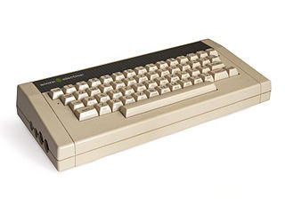
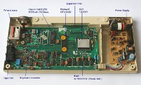

Acorn Electron

Released in 1983, the Acorn Electron was Acorn's most popular home computer and for a while was the 3rd best selling home computer in the UK.
The Electron was an 8 bit microcomputer based around the 6502 processor with 32k of RAM and used BBC Basic as its programming language.
ElkJs
ElkJS is a javascript based emulator for the Acorn Electron. I was inspired to write this after contributing some work to the JSSpeccy project by Matt Westcott. The Sinclair Spectrum and Acorn Electron were two memorable machines from my younger years so I decided to write a Javascript Electron emulator as one did not already exist.

ElkJS aims to emulate the electron accurately enough to be able to play many of the classic games made for this machine.
The sourcecode for this emulator is available in my
github repository
Please visit my forum to leave feedback, report bugs, talk about these (and other) JavaScript emulators
EmulateJS
Usage
For the most part it should be pretty self explanatory. There are a few keyboard mappings you might need to be aware of:
- FUNC = ALT
- COPY = HOME
- BREAK = F12
The emulation is fairly accurate and most games should work. Firetrack isnt 100% and does display some slight graphical corruption.
Exile appears to freeze after the game is loaded. All other games i have tried work fine.
The browse button allows you to open UEF files containing snapshots or tape images. You can also select ZIP files and the first
uef file found in the zip will be opened.
Most if not all games are easily obtainable in UEF format on the internet.
Some of my favourites are
- Citadel
- Repton series
- Dunjunz
Credits
{kind=link}